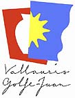
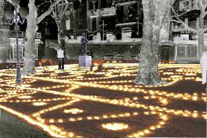
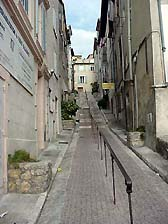

| A.I.R. Vallauris
Artists in Residence
Located
in the heart of the old town of Vallauris,
the non-profit Association A.I.R.
Vallauris (Artists in Residence) welcomes international
artists from all horizons to meet and collaborate with local artists
and to research and create new work in an artistic laboratory created
specifically for them. The Association has three primary objectives
:
- The hosting of resident artists
- The support of contemporary creation
- The organization of cultural events
Created in October 2001, the Association A.I.R. Vallauris, since
April 2002, welcomes two artists at a given time for a period of
two months in its residence and studio available to the artists.
The
creators using different mediums (sculptors, ceramists, filmmakers,
painters, photographers, etc.) benefit from an equipped studio,
independent furnished apartments and a gallery where their works
are presented at the end of the residency period.
The quality of the artistic creation is one of the major concerns
or the program; the selection committee evaluates applicants based
on their artistic experience, merit and project proposal. Since
April 2002, 16 creators of different nationalities have taken part
in the program. 12 artists are programmed for the 2004 season.
The
Association encourages and facilitates interaction between local
artists and international artists. Workshops, conferences, demonstrations
exhibitions are organized with the resident artists. These event
are open to the public. Through partnerships with the local School
of Fine Arts, the local government, and international organizations
a sensibility of exchange between the public, artists, and the international
community is realized.
> A.I.R. Vallauris Workshops
for 2004
Residencies of the World
More Articles
|